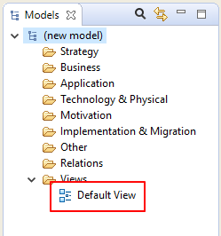
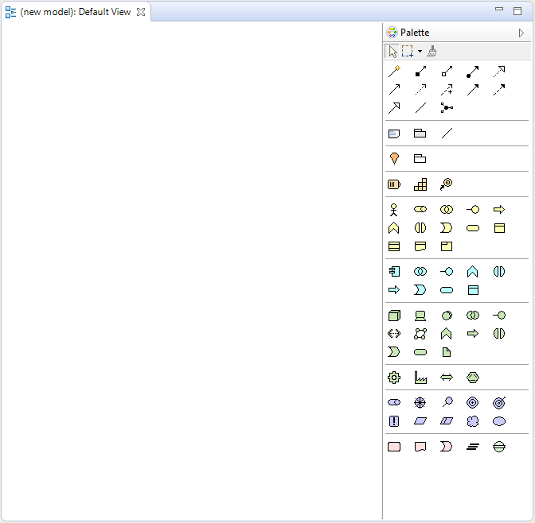
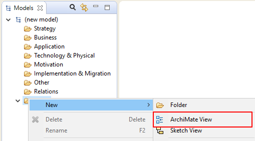

If the model already contains a View it will be visible in the "Views" folder in the Model Tree:
The Default View in the Model Tree
To open and edit the View, double-click it in the Model Tree (or press Ctrl-Shift-O / Command-Shift-O). The View Editor will open showing the editing canvas and palette:
The View Editor showing a blank drawing canvas and palette
An ArchiMate model usually consists of more than one View. To add a new View to the model, right-click on the "Views" folder in the Model Tree and select "New->ArchiMate View" from the context menu:
Adding a new View to a Model
Once the View has been added to the model it can be opened from the tree by double-clicking on it. Any number of Views can be added to a model and be open at the same time. Views are arranged in tabs in the main editing area of the application window.